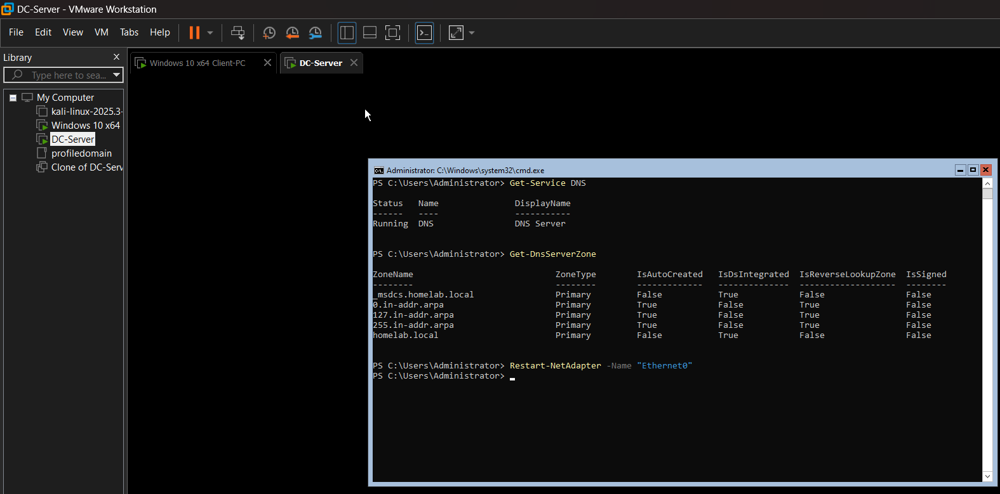
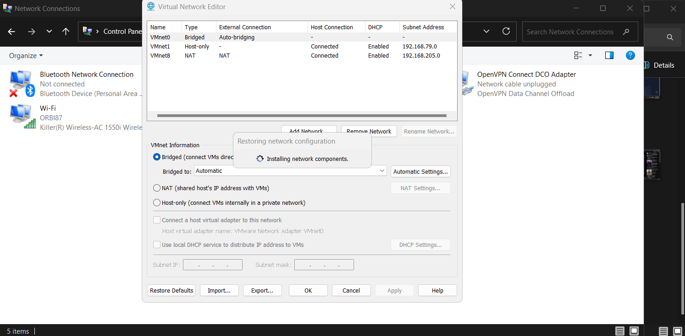
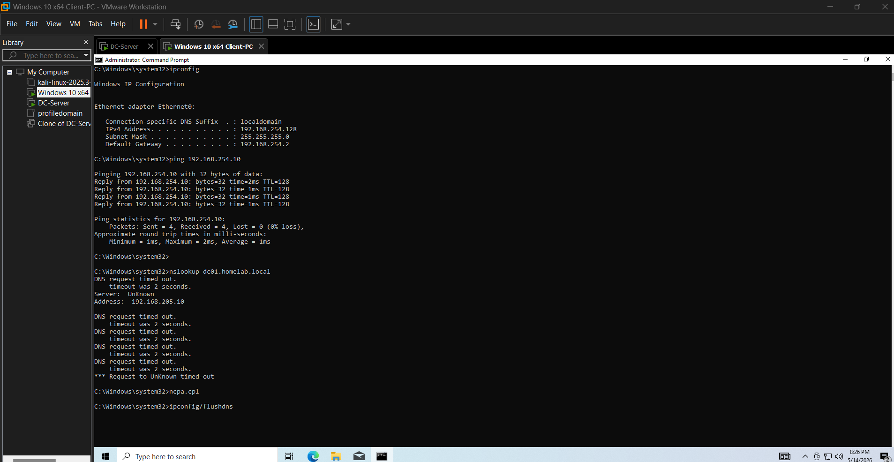
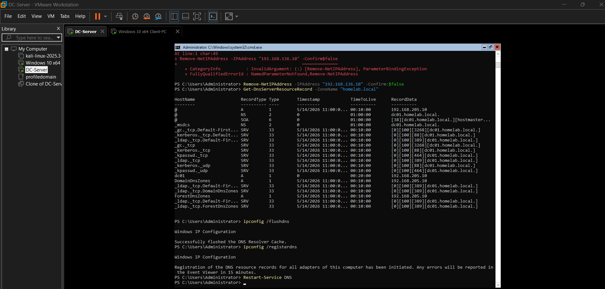
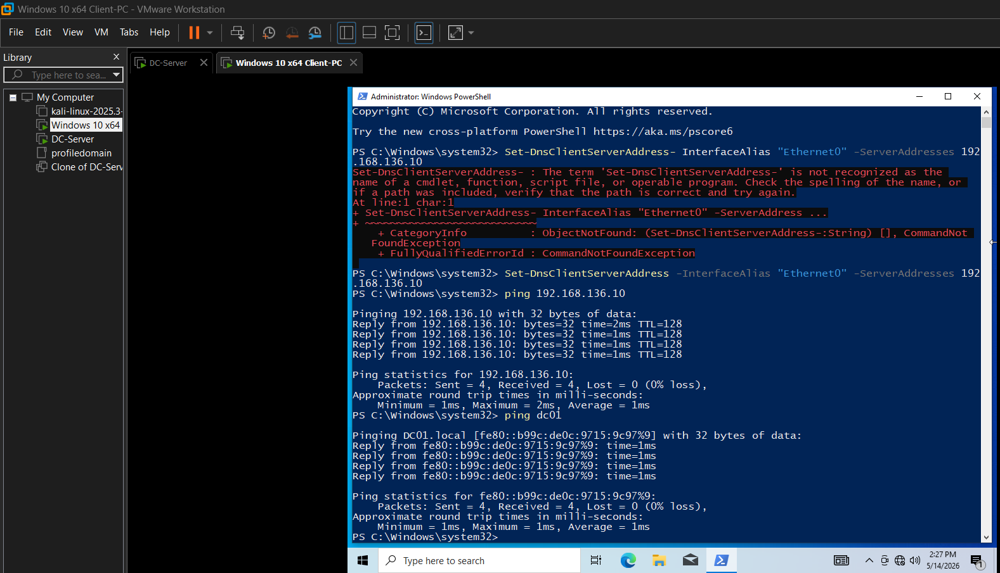
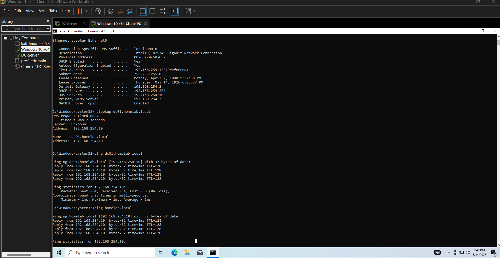
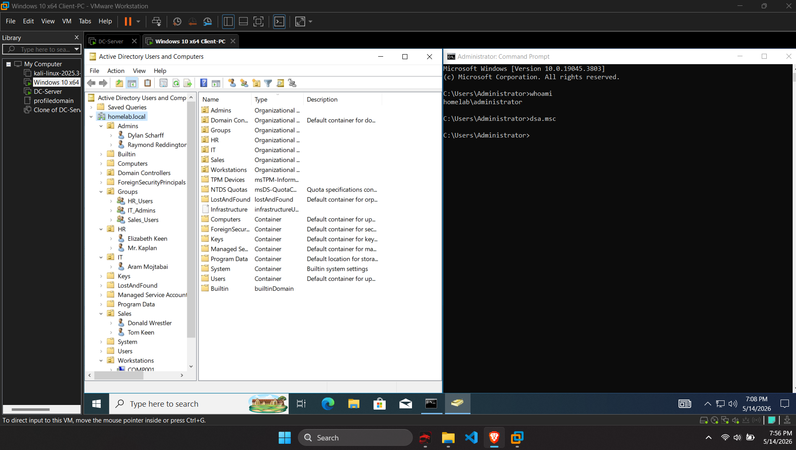

Domain Services • DNS • Group Policy • Troubleshooting • Identity Management
This project demonstrates the deployment and troubleshooting of a Windows Active Directory environment using Windows Server Core and a Windows 10 client in a virtualized VMware lab.
The goal was to build a fully functional domain environment including DNS resolution, domain joining, organizational unit structure, and user/group management.
The first stage involved deploying Windows Server Core as a Domain Controller and configuring Active Directory Domain Services.

Early in the setup, VM network misconfiguration caused unstable communication between the client and domain controller. Switching between Host-Only and NAT networks resulted in mismatched subnets and broken connectivity.


The lab experienced IP conflicts and DNS misconfigurations that prevented proper domain name resolution. These issues blocked authentication and domain services until corrected.

After stabilizing network configuration and DNS settings, the Windows 10 client successfully rejoined the domain. This restored Active Directory trust and enabled authentication.


Organizational Units (OUs), users, and groups were created to simulate a structured enterprise environment. The final configuration includes a working domain login and administrative control via RSAT tools.
